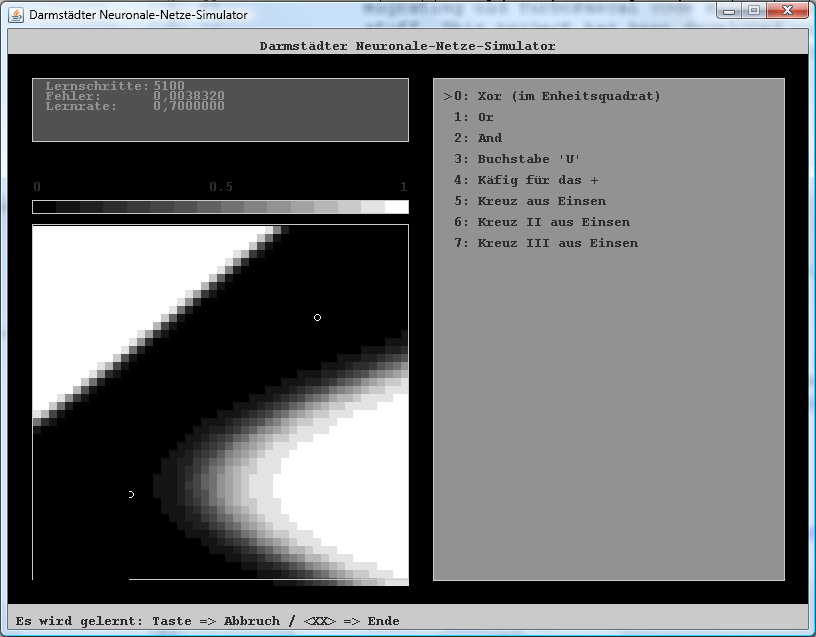

This tools allows playful experiences with neuronal networks. In this case especially backpropagation networks.
The whole project is based on code (originally written in Turbo Pascal) and ideas I created together with Markus Seeger in the years 1994-1996. In those days we had the idea to implement a speech recognition engine based on neuronal networks.
The project's aim was to get awarded. We wanted to win a prize at the famous German competition called "Jugend forscht". Finally we won a special acknowlegdement award from the Hassian State. Not that bad...
I really loved to work on this project, and I thought for somebody it could be interesting to get our results. If you're a teacher and are interested in more functionality and/or explanation, please let me know @dawnofmusic.
NNSimula showing a learning network for a specific input pattern
NNSimula like it was in 1995, when I created it for the first time together with Markus.
2012 Sebastian A. Weiß @dawnofmusic
Visit @dawnofmusic